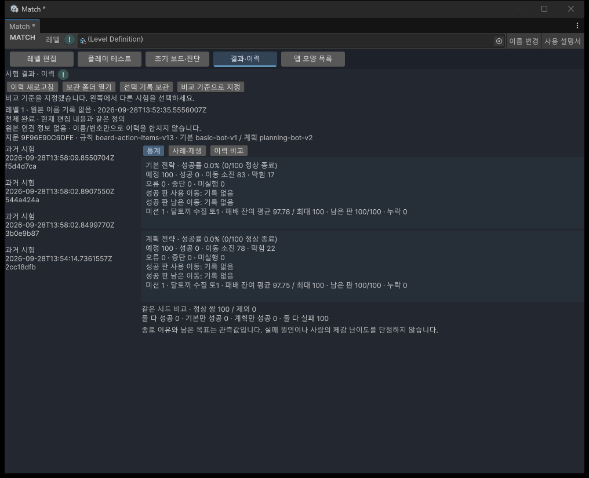
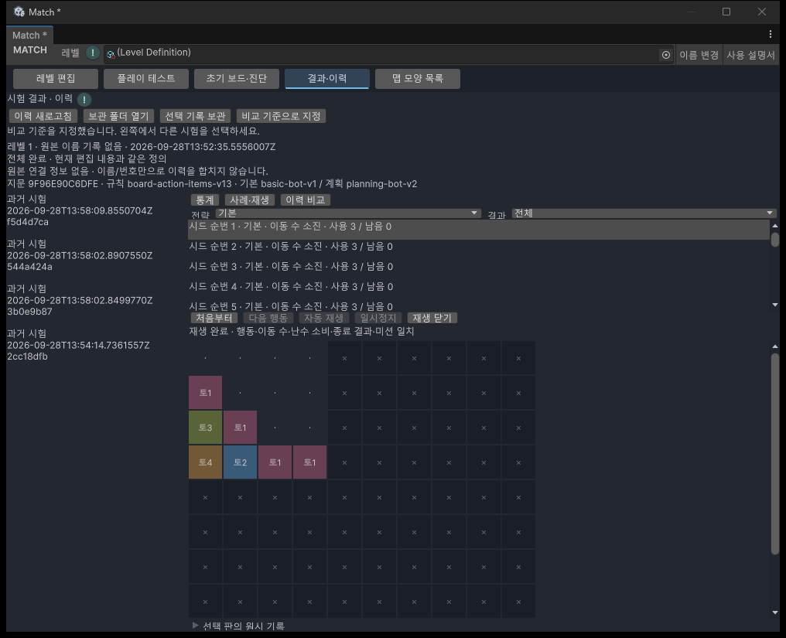
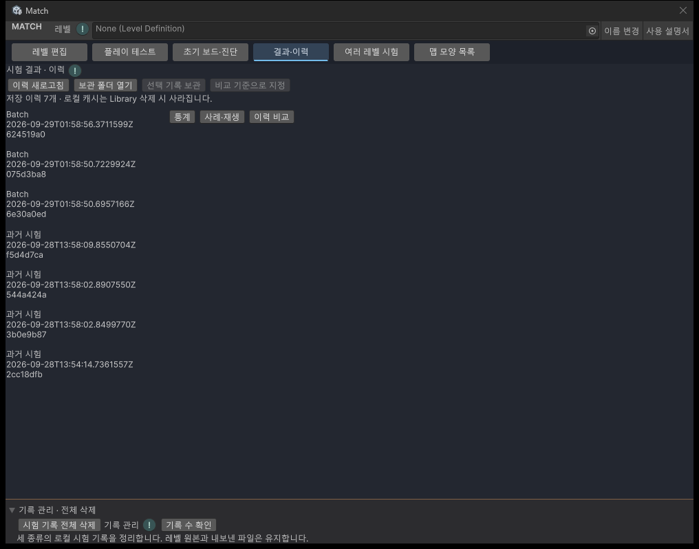

10 · 시험 결과 확인
결과와 이력
반복 시험 결과를 살펴보고, 실제 행동을 다시 보면서 레벨을 다듬습니다.
준비 플레이 테스트에서 반복 시험을 실행하거나, 보관해 둔 시험 폴더를 준비하세요. Match 창 위쪽의 결과·이력 탭으로 이동합니다.
통계 읽기

- 이력 새로고침을 누릅니다. 왼쪽 목록에서 시험을 선택합니다. 따로 보관한 기록은 보관 폴더 열기로 불러옵니다.
- 판별 기록 확인이 끝나면 통계에서 기본·계획 전략의 결과를 확인합니다.
- 위쪽의 시험 조건을 읽습니다. 현재 편집 내용과 다른 과거 사본이면 현재 레벨의 결과가 아닙니다.
| 표시 | 뜻 |
|---|---|
| 정상 종료 | 성공, 이동 수 소진, 정상 막힘을 합친 수입니다. 실행 오류와 중단은 제외합니다. |
| 성공률 | 성공 수 ÷ 정상 종료 수입니다. 정상 종료가 없으면 계산할 기록이 없다고 표시합니다. |
| 오류·중단·미실행 | 게임에서 정상적으로 패배한 결과와 따로 셉니다. 일부 실행한 시험은 전체 완료와 구분합니다. |
| 사용·남은 이동 수 | 성공한 판만 모아 평균·중앙값·최솟값·최댓값을 보여줍니다. 클릭한 횟수와 다를 수 있습니다. |
| 실패 시 남은 미션 | 정상적으로 패배한 판의 남은 목표입니다. 없는 기록을 0개로 채우지 않습니다. 곰팡이처럼 늘어나는 목표도 실제 남은 수를 사용합니다. |
| 같은 시드 비교 | 두 전략이 같은 시작 조건으로 실행했고 양쪽 모두 정상 종료한 쌍만 비교합니다. 제외된 쌍도 표시합니다. |
예를 들어 성공 3판, 정상 패배 3판, 오류 1판이면 성공률은 3 ÷ 6 = 50%입니다. 남은 상자가 많아도 상자가 실패의 원인이라고 단정하지 않습니다. 이 단계에서는 난이도 등급을 제공하지 않습니다.
사례 재생

- 사례·재생을 누르고 전략과 결과를 골라 목록을 좁힙니다.
- 보고 싶은 판을 선택합니다. 선택 판의 원시 기록을 펼치면 행동과 이동 수, 난수 소비 기록을 읽을 수 있습니다. 난수 소비는 같은 진행인지 대조하기 위한 내부 기록입니다.
- 처음부터를 누릅니다. 저장했던 레벨 사본으로 시작 보드를 준비합니다.
- 다음 행동은 한 행동과 그에 따른 폭발·낙하 처리가 끝날 때까지 진행합니다. 자동 재생은 기록 끝까지 이어갑니다.
- 일시정지로 멈춘 뒤 다음 행동 또는 자동 재생으로 이어갑니다. 재생 닫기는 보드 사본만 정리합니다.
다른 탭으로 이동하면 재생은 멈춥니다. 돌아와도 자동으로 재개하지 않습니다. 원본 레벨을 바꾸거나 창을 닫으면 재생 사본은 해제됩니다. 스크립트가 다시 로드되면 기록을 다시 열고 처음부터 재생하세요.
재생은 봇에게 새 행동을 고르게 하지 않습니다. 저장된 행동을 같은 게임 규칙으로 실행하면서 이동 수·난수 소비·마지막 결과와 미션을 대조합니다. 처음 다른 부분을 발견하면 멈추고 이유를 표시합니다.
오류나 중단 사례는 저장된 완료 행동까지만 부분 재생합니다. 중단 당시 처리 중이던 화면까지 복원하는 기능은 아닙니다. 시작 상태도 기록되지 않았다면 재생할 행동이 없다고 안내합니다.
이전 시험과 비교
- 기준으로 삼을 시험을 선택하고 비교 기준으로 지정을 누릅니다.
- 왼쪽 목록 또는 보관 폴더에서 다른 시험을 엽니다.
- 이력 비교에서 두 결과와 조건 차이를 읽습니다.
레벨 내용, 시드 묶음, 게임 규칙이나 전략 버전이 다르면 따로 표시합니다. 다른 시드의 차이를 레벨 수정 효과라고 단정하지 마세요. 같은 시드 쌍의 비교는 버전 조건이 맞고 양쪽 모두 정상 종료한 공통 시드만 사용합니다.
현재 레벨 파일 이름이 바뀌어도 연결 정보가 있으면 파일을 찾습니다. 원본 파일이 삭제되어도 보관한 레벨 사본은 남습니다. 연결 정보가 없는 옛 기록은 이름이나 레벨 번호만 보고 같은 파일이라고 간주하지 않습니다.
기록 보관과 다시 열기
프로젝트의 Library/Match/AutoPlay는 임시 로컬 저장소입니다. Library 폴더를 지우면 기록도 사라질 수 있으니 필요한 결과를 따로 보관하세요.
- 시험을 일시정지하거나 종료한 뒤 보관할 기록을 선택합니다.
- 선택 기록 보관을 누르고 저장할 상위 폴더를 고릅니다.
- 보관 완료가 표시될 때까지 기다립니다. 선택한 위치 안에
MatchAnalysis-시험ID폴더를 만듭니다. - 다시 볼 때는 보관 폴더 열기를 누르고
batch.json과 판별 JSON이 들어 있는 폴더 자체를 선택합니다.
기존 폴더는 덮어쓰지 않습니다. 같은 기록을 다시 보관하려면 다른 상위 폴더를 고르세요. 레벨 사본·실행 버전·시드·행동과 미션을 한 묶음으로 보관하므로 폴더 전체를 이동해야 합니다. 조회만 해서는 원본 파일이나 현재 편집 레벨이 바뀌지 않습니다.
문제가 있을 때
- 판 파일 누락·중복 또는 요약 불일치: 원본 보관 폴더에서 전체 파일을 다시 복사하세요. 없는 판을 패배로 대신 계산하지 않습니다.
- 조회 후 파일 변경: 이력을 다시 열어 최신 파일을 검사합니다. 외부 편집 중인 기록은 먼저 편집을 끝내세요.
- 규칙 버전 차이: 통계를 읽을 수 있어도 정확한 재생은 불가능할 수 있습니다. 과거 규칙으로 자동 전환하지 않습니다.
- 보관 실패: 오류 안내와 저장 위치를 확인하세요. 기존 원본은 유지합니다. 임시 파일 정리도 실패했다면 안내된 위치가 남을 수 있습니다.
- 재생 버튼 비활성: 판 선택과 기록 확인 완료 여부, 버전 호환 여부를 확인하세요. 다른 시험이 실행 중이면 먼저 일시정지하거나 중지합니다.
추가 · 시험 기록 전체 삭제

진입 Match → 통합 작업창 → 결과·이력 또는 여러 레벨 시험 → 아래쪽 기록 관리 · 전체 삭제 펼치기 → 시험 기록 전체 삭제.
- 시험을 완료하거나 중지합니다. 일시정지 상태에서는 재개할 수 있으므로 삭제할 수 없습니다. 기록 보관 작업도 먼저 끝냅니다.
- 아래쪽 기록 관리 · 전체 삭제를 펼칩니다. 기록 수 확인으로 저장된 실행 수를 확인할 수 있습니다. 전체 삭제 버튼을 누르면 반복 시험·이동 횟수 추천·여러 레벨 시험의 개수를 다시 확인합니다.
- 확인 창에서 범위를 살펴보고 전체 삭제를 누릅니다. 취소나 닫기를 선택하면 기록과 현재 선택은 유지됩니다.
- 화면에 삭제 완료 수와 실패 수가 나옵니다. 여러 레벨 실행 안의 개별 판도 함께 삭제되며, 끝나면 이전 분석·비교·재생 화면을 비웁니다.
되돌리기는 제공하지 않습니다. 레벨 원본, 등록 맵, 따로 내보낸 보관본은 유지합니다. 필요한 시험은 먼저 선택 기록 보관으로 다른 폴더에 저장하세요.
일부 파일을 지우지 못하면 남은 실행과 이유를 표시합니다. 파일을 사용 중인 프로그램을 닫고 다시 확인하세요. 알 수 없는 파일이나 연결된 폴더는 그대로 둡니다. 삭제 중에는 새 시험을 시작할 수 없습니다.
작성 2026.09.29 · Windows / Unity 6000.3.10f1. 임시 기록 저장·삭제 검사와 실제 Unity 화면 검증 완료. 검사 중 사용자 실제 기록은 삭제하지 않았습니다. 브라우저 배치 확인은 후속 검수 대상입니다.
2026.09.29 | 기록 관리 추가 | 이전: 화면에서 전체 삭제 불가 → 현재: 세 종류의 로컬 시험 기록을 확인 후 삭제 | 저장된 기록 정리 요청.
확인 범위와 변경 이력
2026-10-08 · 추가 · 튜토리얼 메뉴 · 일반 매뉴얼의 공통 목차에 튜토리얼 진입 항목을 추가하여 다른 안내를 읽은 뒤에도 돌아갈 수 있게 했습니다. Windows / Chrome · 메뉴 왕복 이동 확인.
설명 작성일: 2026.09.29 · 대상: Windows / Unity 6000.3.10f1.
현재 검증 상태: 기록 집계·저장 행동 재생·실제 Editor 버튼 검사 완료. 전체 28단계 완료 감사는 진행 중입니다. 현재: 통계·재생·실제 재로드·영향 회귀의 20개 완료 조건을 확인했습니다. 통계·재생 화면은 실제 창을 캡처해 확인했습니다. 브라우저 배치 확인은 미검증입니다.
| 변경일 | 변경 항목 | 내용 | |
|---|---|---|---|
| 2026.09.29 | 예상 난이도 확인 완료 | 추가 · 실제 800판·추천 UI·영향 회귀 완료 | 445개 검사 통과. 인간 체감·브라우저 배치는 미검증 |
| 2026.09.29 | 예상 난이도 | 추가 · 등급·판단 보류·근거 안내 연결 | 29단계 구현 반영. 대표 레벨 검증 진행 중 |
| 2026.09.29 | 검증 상태 | 진행 중 → 실제 UI·재로드·영향 회귀와 20조건 감사 완료. 브라우저 배치는 미검증. | |
| 2026.09.29 | 결과와 이력 | 추가 · 통계, 재생, 비교, 기록 보관 사용법과 실제 통계·재생 창 캡처. |